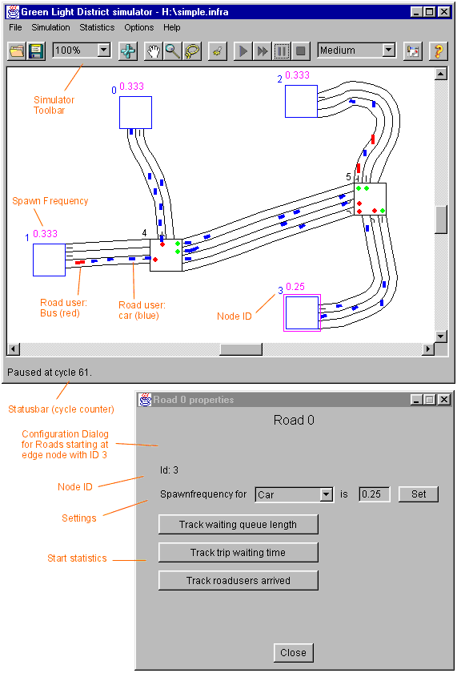

1. Editor
2. Simulator
 a. Interface
a. Interface
 b. Usage
b. Usage
 c. From sims to evals
c. From sims to evals
3. Evaluation Tools
4. An Example Session
5. Algorithms
Simulator
The Simulator is where the real exploration of traffic interaction takes place.
In the Simulator window the loaded map is animated with its road users, the traffic lights show their status, and various on-road signs depict the road's special driving rules.
The only changes that can be applied in the Simulator are those concerning the Driving Policy algorithms, the spawning rules for road users, and the portion of the map and zoom factor of depiction.
The Interface section lays out the basic controls, and the Use section highlights interaction.
